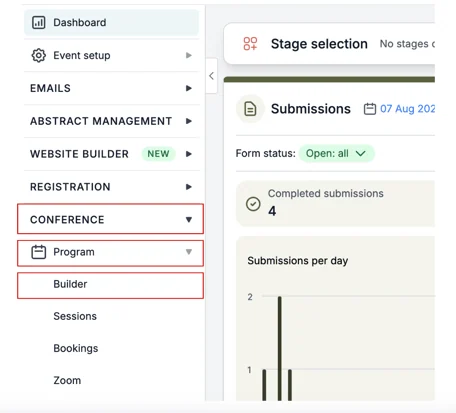
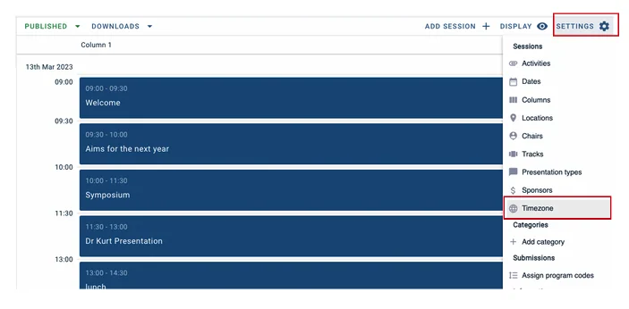
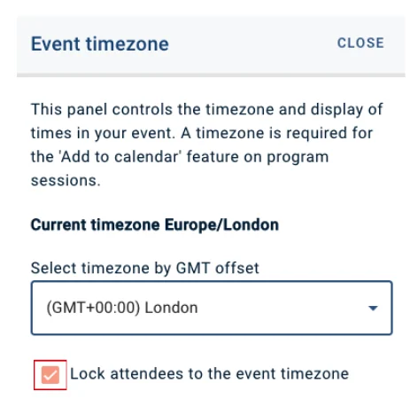
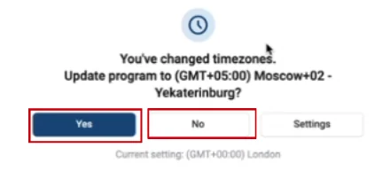
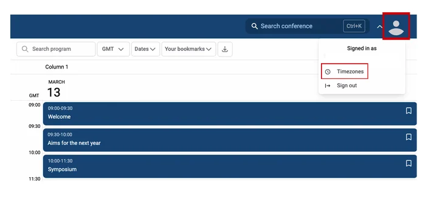
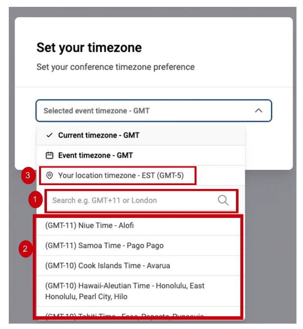
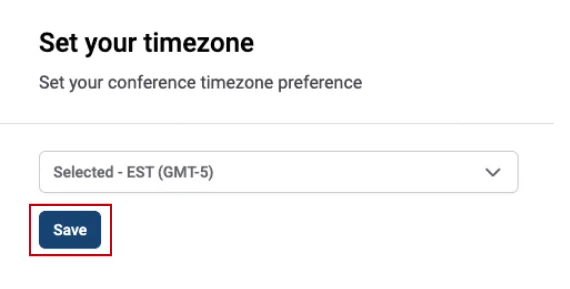

Locking and change the timezone for your conference
In this article You can learn how to lock a timezone to their event, and Attendees can learn how to change their timezone.#
Skip to:
How to change timezones - Attendees
Admins - Lock Timezones
From your Dashboard, click on the Conference → Program → Builder.**

Next click on the Settings button at the top-right of the table, and click on Timezone.

A box will now appear. You’ll need to tick the box that says Lock attendees to the event timezone.

Now your event timezone will be locked to its local time.
How to change your timezone as an attendee
If you’re travelling or virtually attending an event from a different timezone, you can change your timezone on the software to the local time where you are currently.
This will adjust the time accordingly on your schedule.
For example, you’re attending a virtual conference in London, UK, and the first session is at 9am GMT. You are based in Johannesburg, South Africa, which is two hours ahead. Therefore you’ll need to log in at 11am (GMT+2).
Your schedule will adjust the time according to your local time.
Event is happening between 9am - 5pm GMT; it will show on your schedule as 11am-7pm GMT+2.
Please note that when you are travelling, when you log into the event program, the software will notify you that you’re in a different timezone and ask if you would like to change your current local time automatically.
You can either click Yes (to automatically change) or No to keep it set to your previous local time.

If you want to adjust your timezone manually, follow the instructions below.
From the Program, click on your avatar at the top right of the page and select Timezones from the dropdown box.

You can (1) search or (2) scroll through for the timezone you would like to change or (3) select Your Location Timezone to change automatically.

On the next screen, click Save.

Now your schedule will be set to your local timezone.
If you should require further assistance, please contact our Support Team, via our Contact Form.
Didn't solve it? Ask our support team
No question is too small, and there's no charge for asking. Raise a ticket and someone who knows the software will pick it up.
Did this page solve it?
Thanks — this helps us fix it.